Chapter 7 Categorical Data Analysis
Everything analysis covered so far has used a continuous variable as a target variable of interest. What if our target variable was categorical instead of continuous? Our analysis must change to adjust.
This Chapter aims to answer the following questions:
How do you explore categorical variables?
- Nominal vs. Ordinal
- Tests of Association
- Measures of Association
How do you model a categorical target variable?
- Logistic Regression
- Interpreting Logistic Regression
- Assessing Logistic Regression
7.1 Describing Categorical Data
We need to first explore our data before building any models to try and explain/predict our categorical target variable. With categorical variables, we can look at the distribution of the categories as well as see if this distribution has any association with other variables. For this analysis we are going to still use our Ames housing data. Imagine you worked for a real estate agency and got a bonus check if you sold a house above $175,000 in value. Let’s create this variable in our data:
You are interested in what variables might be associated with obtaining a higher chance of getting a bonus (selling a house above $175,000). An association exists between two categorical variables if the distribution of one variable changes when the value of the other categorical changes. If there is no association, the distribution of the first variable is the same regardless of the value of the other variable. For example, if we wanted to know if obtaining a bonus on selling a house in Ames, Iowa was associated with whether the house had central air we could look at the distribution of bonus eligible houses. If we observe that 42% of homes with central air are bonus eligible and 42% of homes without central air are bonus eligible, then it appears that central air has no bearing on whether the home is bonus eligible. However, if instead we observe that only 3% of homes without central air are bonus eligible, but 44% of home with central air are bonus eligible, then it appears that having central air might be related to a home being bonus eligible.
To understand the distribution of categorical variables we need to look at frequency tables. A frequency table shows the number of observations that occur in certain categories or intervals. A one way frequency table examines all the categories of one variable. These are easily visualized with bar charts.
Let’s look at the distribution of both bonus eligibility and central air using the table function. The ggplot function with the geom_bar function allows us to view our data in a bar chart.
##
## 0 1
## 1177 874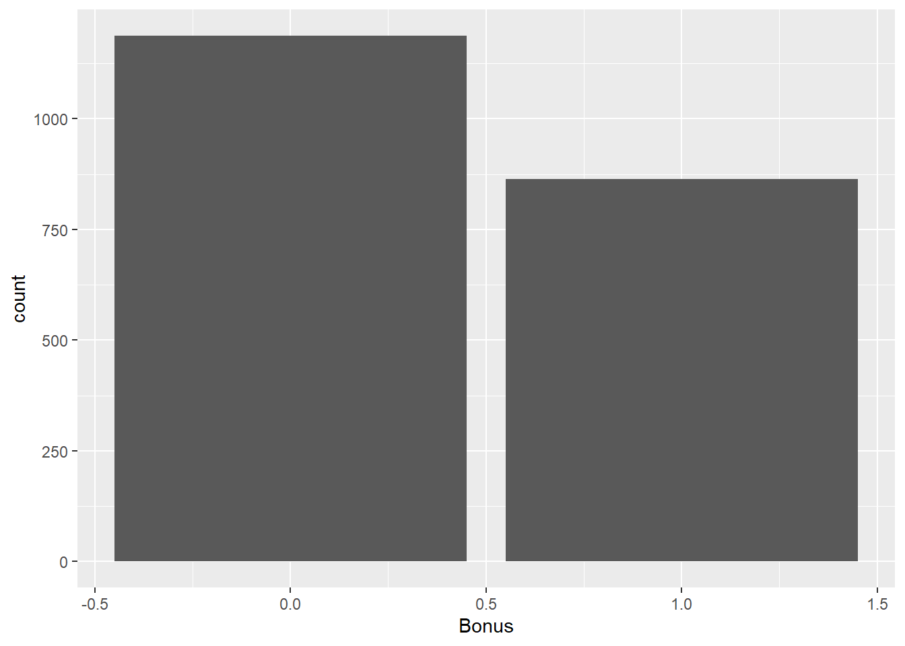
##
## N Y
## 143 1908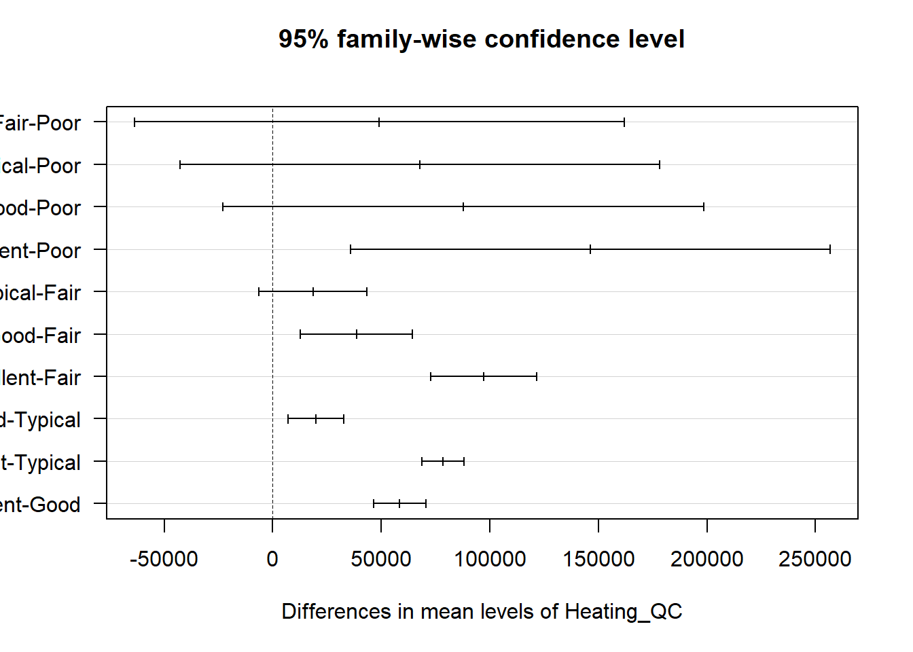
Frequency tables show single variables, but if we want to explore two variables together we look at cross-tabulation tables. A cross-tabulation table shows the number of observations for each combination of the row and column variables.
Let’s again examine bonus eligibility, but this time across levels of central air. Again, we can use the table function. The prop.table function allows us to compare two variables in terms of proportions instead of frequencies.
##
## 0 1
## N 137 6
## Y 1040 868##
## 0 1
## N 0.066796685 0.002925402
## Y 0.507069722 0.423208191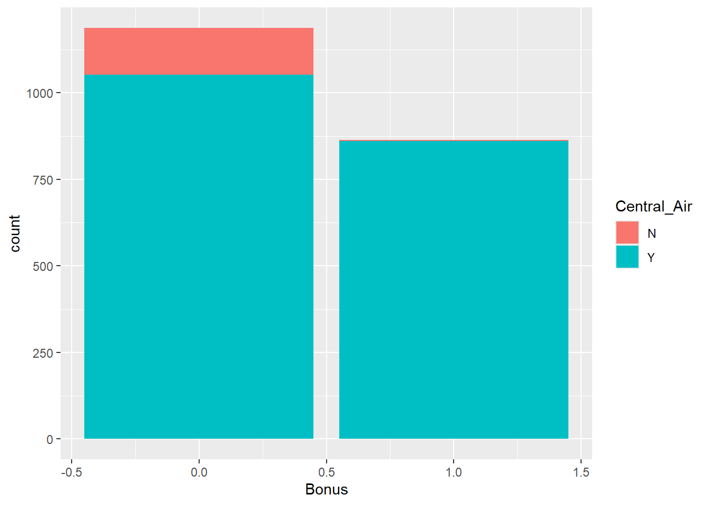
From the above output we can see that 133 homes have no central air with only 2 of them being bonus eligible. However, there are 1918 homes that have central air with 849 of them being bonus eligible. For an even more detailed breakdown we can use the CrossTable function.
##
##
## Cell Contents
## |-------------------------|
## | N |
## | Chi-square contribution |
## | N / Row Total |
## | N / Col Total |
## | N / Table Total |
## |-------------------------|
##
##
## Total Observations in Table: 2051
##
##
## | train$Bonus
## train$Central_Air | 0 | 1 | Row Total |
## ------------------|-----------|-----------|-----------|
## N | 137 | 6 | 143 |
## | 36.778 | 49.528 | |
## | 0.958 | 0.042 | 0.070 |
## | 0.116 | 0.007 | |
## | 0.067 | 0.003 | |
## ------------------|-----------|-----------|-----------|
## Y | 1040 | 868 | 1908 |
## | 2.756 | 3.712 | |
## | 0.545 | 0.455 | 0.930 |
## | 0.884 | 0.993 | |
## | 0.507 | 0.423 | |
## ------------------|-----------|-----------|-----------|
## Column Total | 1177 | 874 | 2051 |
## | 0.574 | 0.426 | |
## ------------------|-----------|-----------|-----------|
##
## The advantage of the CrossTable function is that we can easily get not only the frequencies, but the cell, row, and column proportions. For example, the third number in each cell gives us the row proportion. For homes without central air, 98.5% of them are not bonus eligible, while 1.5% of them are. For homes with central air, 55.7% of the homes are not bonus eligible, while 44.3% of them are. This would appear that the distribution of bonus eligible homes changes across levels of central air - a relationship between the two variables. This expected relationship needs to be tested statistically for verification.
7.1.1 Python Code
## Bonus
## 0 1162
## 1 889
## Name: count, dtype: int64plot = (
ggplot(train)
+ geom_bar(aes(x='Bonus'))
+ labs(x='Bonus', y='Count')
+ theme_minimal()
)
plot.show()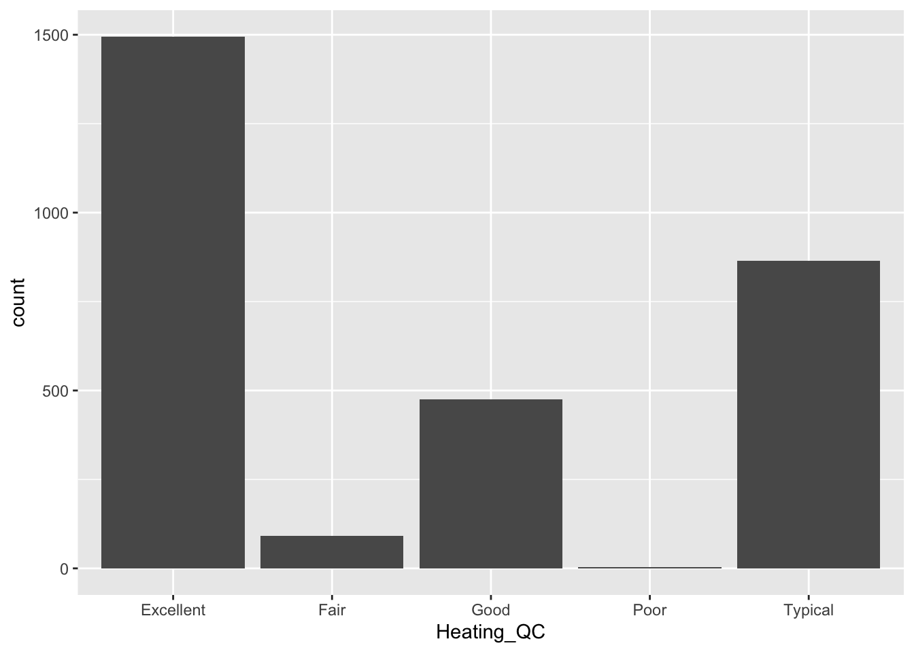
## Central_Air
## Y 1913
## N 138
## Name: count, dtype: int64plot = (
ggplot(train)
+ geom_bar(aes(x='Central_Air'))
+ labs(x='Central_Air', y='Count')
+ theme_minimal()
)
plot.show()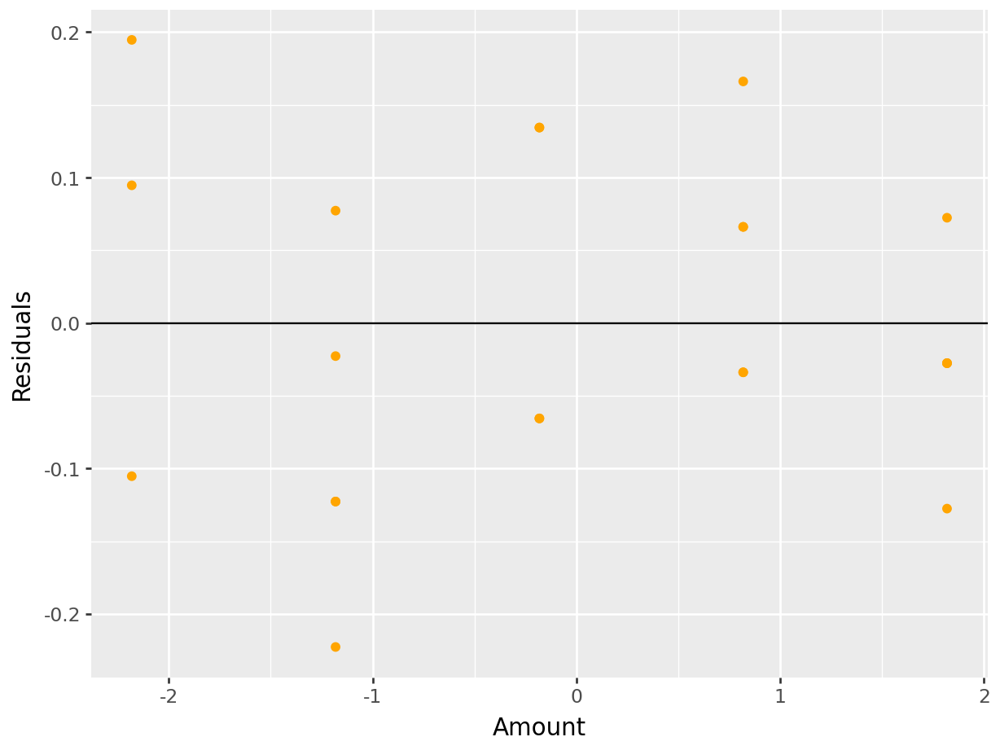
plot = (
ggplot(train)
+ geom_bar(aes(x='Bonus', fill='Central_Air'), position='stack')
+ labs(x='Bonus', y='Count', fill='Central_Air')
+ theme_minimal()
)
plot.show()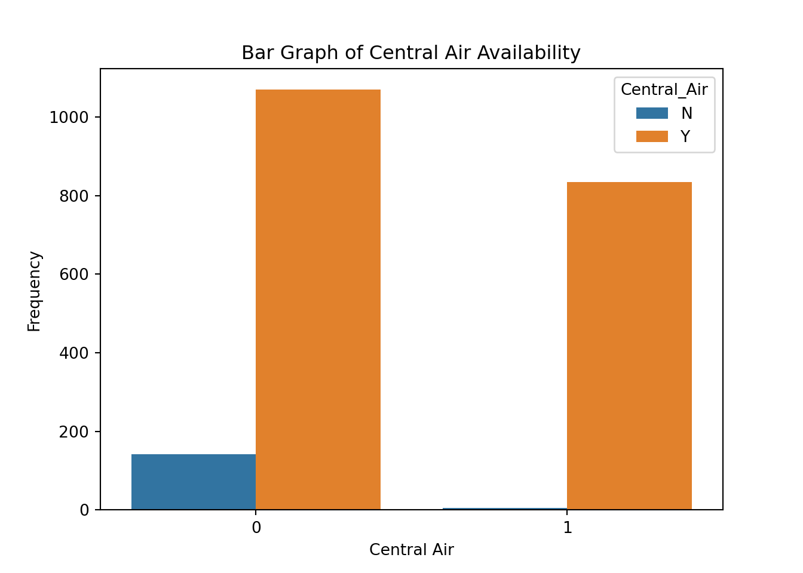
counts = pd.crosstab(train['Central_Air'], train['Bonus'], margins=True)
# Get row proportions
row_pct = pd.crosstab(train['Central_Air'], train['Bonus'], normalize='index')
# Get column proportions
col_pct = pd.crosstab(train['Central_Air'], train['Bonus'], normalize='columns')
# Get table proportions
all_pct = pd.crosstab(train['Central_Air'], train['Bonus'], normalize='all')
print("\n--- Row Proportions ---")##
## --- Row Proportions ---## Bonus 0 1
## Central_Air
## N 0.96 0.04
## Y 0.54 0.46##
## --- Column Proportions ---## Bonus 0 1
## Central_Air
## N 0.11 0.01
## Y 0.89 0.99##
## --- Table Proportions ---## Bonus 0 1
## Central_Air
## N 0.06 0.00
## Y 0.50 0.437.2 Tests of Association
Much like in Chapter 2 we have statistical tests to evaluate relationships between two categorical variables. The null hypothesis for these statistical tests is that the two variables have no association - the distribution of one variable does not change across levels of another variable. The alternative hypothesis is an association between the two variables - the distribution of one variable changes across levels of another variable.
These statistical tests follow a \(\chi^2\)-distribution. The \(\chi^2\)-distribution is a distribution that has the following characteristics:
- Bounded below by 0
- Right-skewed
- One set of degrees of freedom
A plot of a variety of \(\chi^2\)-distributions is shown here:
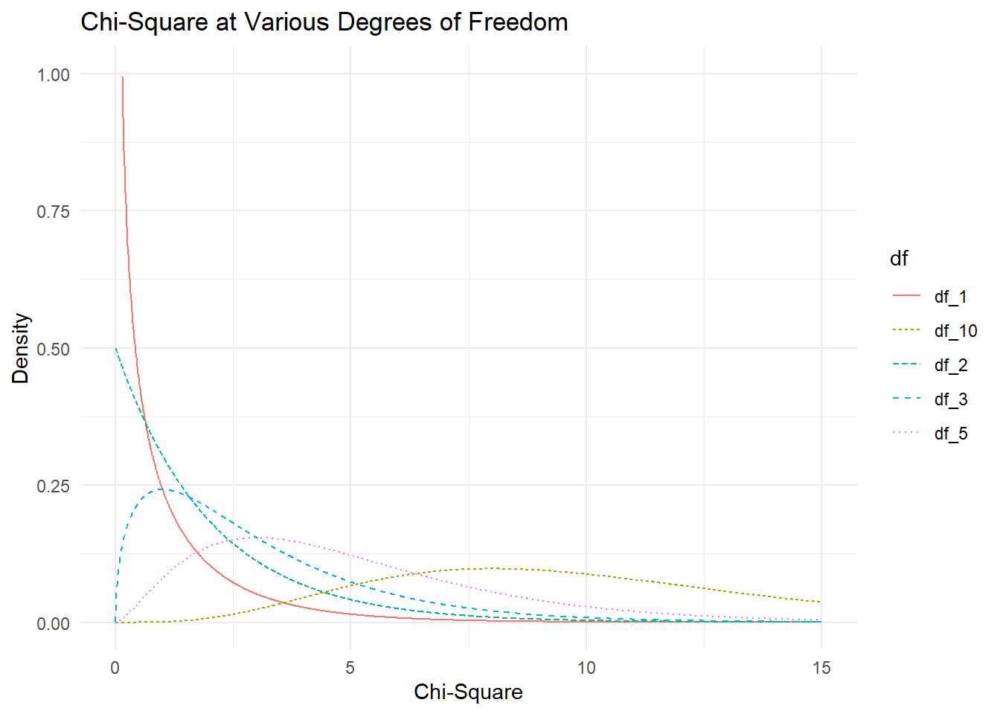
Two common \(\chi^2\) tests are the Pearson and Likelihood Ratio \(\chi^2\) tests. They compare the observed count of observations in each cell of a cross-tabulation table between two variables to their expected count if there was no relationship. The expected cell count applies the overall distribution of one variable across all the levels of the other variable. For example, overall 58.5% of all homes are not bonus eligible. If that were to apply to every level of central air, then the 133 homes without central air would be expected to have 77.8 ( $ = 133 $ ) of them would be bonus eligible while 55.2 ( $ = 133 $ ) of them would not be bonus eligible. We actually observe 131 and 2 homes for each of these categories respectively. The further the observed data is from the expected data, the more evidence we have that there is a relationship between the two variables.
The test statistic for the Pearson \(\chi^2\) test is the following:
\[ \chi^2_P = \sum_{i=1}^R \sum_{j=1}^C \frac{(Obs_{i,j} - Exp_{i,j})^2}{Exp_{i,j}} \] From the equation above, the closer that the observed count of each cross-tabulation table cell to the expected count, the smaller the test statistic. As with all previous hypothesis tests, the smaller the test statistic, the larger the p-value, implying less evidence for the alternative hypothesis.
Let’s examine the relationship between central air and bonus eligibility using the chisq.test function.
##
## Pearson's Chi-squared test with Yates' continuity correction
##
## data: table(train$Central_Air, train$Bonus)
## X-squared = 91.093, df = 1, p-value < 2.2e-16The above results shows an extremely small p-value that is below any reasonable significance level. This implies that we have statistical evidence for a relationship between having central air and bonus eligibility of homes. The p-value comes from a \(\chi^2\)-distribution with degrees of freedom that equal the product of the number of rows minus one and the number of columns minus one.
Another common test is the Likelihood Ratio test. The test statistic for this is the following:
\[ \chi^2_L = 2 \times \sum_{i=1}^R \sum_{j=1}^C Obs_{i,j} \times \log(\frac{Obs_{i,j}}{Exp_{i,j}}) \]
The p-value comes from a \(\chi^2\)-distribution with degrees of freedom that equal the product of the number of rows minus one and the number of columns minus one. Both of the above tests have a sample size requirement. The sample size requirement is 80% or more of the cells in the cross-tabulation table need expected count larger than 5.
For smaller sample sizes, this might be hard to meet. In those situations, we can use a more computationally expensive test called Fisher’s exact test. This test calculates every possible permutation of the data being evaluated to calculate the p-value without any distributional assumptions. To perform this test we can use the fisher.test function.
##
## Fisher's Exact Test for Count Data
##
## data: table(train$Central_Air, train$Bonus)
## p-value < 2.2e-16
## alternative hypothesis: true odds ratio is not equal to 1
## 95 percent confidence interval:
## 8.467811 53.013174
## sample estimates:
## odds ratio
## 19.04238We see the same results as with the Pearson test because the assumptions were met for sample size.
Both the Pearson and Likelihood Ratio \(\chi^2\) tests can handle any type of categorical variable either ordinal, nominal, or both. However, ordinal variables provide us extra information since the order of the categories actually matters compared to nominal. We can test for even more with ordinal variables against other ordinal variables whether two ordinal variables have a linear relationship as compared to just a general one. An ordinal test for association is the Mantel-Haenszel \(\chi^2\) test. The test statistic for the Mantel-Haenszel \(\chi^2\) test is the following:
\[ \chi^2_{MH} = (n-1)r^2 \] where \(r^2\) is the Spearman’s correlation between the column and row variables. This test follows a \(\chi^2\)-distribution with only one degree of freedom.
Since both the central air and bonus eligibility variables are binary, they are ordinal. Since they are both ordinal, we should use the Mantel-Haenszel \(\chi^2\) test with the CMHtest function. In the main output table, the first row is the Mantel-Haenszel \(\chi^2\) test.
## Chisq Df Prob
## 9.272875e+01 1.000000e+00 5.997599e-22From here we can see another extremely small p-value as we saw in earlier, more general \(\chi^2\) tests.
7.2.1 Python Code
from scipy.stats import chi2_contingency
chi2_contingency(pd.crosstab(index = train['Central_Air'], columns = train['Bonus']), correction = True)## Chi2ContingencyResult(statistic=89.93013829077994, pvalue=2.4671990961829127e-21, dof=1, expected_freq=array([[ 78.18430034, 59.81569966],
## [1083.81569966, 829.18430034]]))from scipy.stats import fisher_exact
fisher_exact(pd.crosstab(index = train['Central_Air'], columns = train['Bonus']))## SignificanceResult(statistic=18.860194174757282, pvalue=1.1286497199252816e-26)No real Mantel-Haenszel options in Python that work for anything more than a 2x2 table so I wouldn’t trust them.
7.3 Measures of Association
Tests of association are best designed for just that, testing the existence of an association between two categorical variables. However, just like we saw in Chapter 1.1, hypothesis tests are impacted by sample size. When we have the same sample size, tests of association can rank significance of variables with p-values. However, when sample sizes are not the same between two tests, the tests of association are not best for comparing the strength of an association. In those scenarios, we have measures of strength of association that can be compared across any sample size.
Measures of association were not designed to test if an association exists, as that is what statistical testing is for. They are designed to measure the strength of association. There are dozens of these measures. Three of the most common are the following:
- Odds Ratios (only for comparing two binary variables)
- Cramer’s V (able to compare nominal variables with any number of categories)
- Spearman’s Correlation (able to compare ordinal variables with any number of categories)
An odds ratio indicates how much more likely, with respect to odds, a certain event occurs in one group relative to its occurrence in another group. The odds of an event occurring is not the same as the probability that an event occurs. The odds of an event occurring is the probability the event occurs divided by the probability that event does not occur.
\[ Odds = \frac{p}{1-p} \]
Let’s again examine the cross-tabulation table between central air and bonus eligibility.
##
##
## Cell Contents
## |-------------------------|
## | N |
## | Chi-square contribution |
## | N / Row Total |
## | N / Col Total |
## | N / Table Total |
## |-------------------------|
##
##
## Total Observations in Table: 2051
##
##
## | train$Bonus
## train$Central_Air | 0 | 1 | Row Total |
## ------------------|-----------|-----------|-----------|
## N | 137 | 6 | 143 |
## | 36.778 | 49.528 | |
## | 0.958 | 0.042 | 0.070 |
## | 0.116 | 0.007 | |
## | 0.067 | 0.003 | |
## ------------------|-----------|-----------|-----------|
## Y | 1040 | 868 | 1908 |
## | 2.756 | 3.712 | |
## | 0.545 | 0.455 | 0.930 |
## | 0.884 | 0.993 | |
## | 0.507 | 0.423 | |
## ------------------|-----------|-----------|-----------|
## Column Total | 1177 | 874 | 2051 |
## | 0.574 | 0.426 | |
## ------------------|-----------|-----------|-----------|
##
## Let’s look at the row without central air. The probability that a home without central air is not bonus eligible is 98.5%. That implies that the odds of not being bonus eligible in homes without central air is 65.7 (= 0.985/0.015). For homes with central air, the odds of not being bonus eligible are 1.26 (= 0.557/0.443). The odds ratio between these two would be approximately 52.14 (= 65.7/1.26). In other words, homes without central air are 52.14 times more likely (in terms of odds) to not be bonus eligible as compared to homes with central air. This relationship is intuitive based on the numbers we have seen. Without going into details, it can also be shown that homes with central air are 52.14 times as likely (in terms of odds) to be bonus eligible.
We can use the OddsRatio function to get these same results.
## [1] 19.05705Cramer’s V is another measure of strength of association. Cramer’s V is calculated as follows:
\[ V = \sqrt{\frac{\chi^2_P/n}{\min(Rows-1, Columns-1)}} \]
Cramer’s V is bounded between 0 and 1 for every comparison other than two binary variables. For two binary variables being compared the bounds are -1 to 1. The idea is still the same for both. The further the value is from 0, the stronger the relationship. Unfortunately, unlike \(R^2\), Cramer’s V has no interpretative value. It can only be used for comparison.
We use the assocstats function to get the Cramer’s V value. This function also provides the Pearson and Likelihood Ratio \(\chi^2\) tests as well.
## X^2 df P(> X^2)
## Likelihood Ratio 119.041 1 0
## Pearson 92.774 1 0
##
## Phi-Coefficient : 0.213
## Contingency Coeff.: 0.208
## Cramer's V : 0.213Lastly, we have Spearman’s correlation. Much like the Mantel-Haenszel test of association was specifically designed for comparing two ordinal variables, Spearman correlation measures the strength of association between two ordinal variables. Spearman is not limited to only categorical data analysis as it was also seen back in Chapter 5 with detecting heteroskedasticity. Remember, Spearman correlation is a correlation on the ranks of the observations as compared to the actual values of the observations.
The cor.test function that gave us Pearson’s correlation also provides Spearman’s correlation.
cor.test(x = as.numeric(ordered(train$Central_Air)),
y = as.numeric(ordered(train$Bonus)),
method = "spearman")##
## Spearman's rank correlation rho
##
## data: x and y
## S = 1132129049, p-value < 2.2e-16
## alternative hypothesis: true rho is not equal to 0
## sample estimates:
## rho
## 0.2126818As previously mentioned, these are only a few of the dozens of different measures of association that exist. However, they are the most used ones.
7.3.1 Python Code
Odds ratio:
table = pd.crosstab(train['Central_Air'], train['Bonus'])
# Convert to a statsmodels 2x2 Table object
sm_table = sma.stats.Table2x2(table.values)
print(f"Odds Ratio: {sm_table.oddsratio:.4f}")## Odds Ratio: 18.8602## Log Odds Ratio: 2.9371## Odds Ratio 95% CI: (8.281260335807026, 42.9532353634048)Cramer’s:
from scipy.stats.contingency import association
association(pd.crosstab(index = train['Central_Air'], columns = train['Bonus']), method = "cramer")## 0.2113604274410272Spearman:
## SignificanceResult(statistic=0.21136042744102718, pvalue=3.822493169056582e-22)7.4 Introduction to Logistic Regression
After exploring the categorical target variable, we can move on to modeling the categorical target variable. Logistic regression is a fundamental statistical analysis for data science and analytics. It part of a class of modeling techniques known as classification models since they are trying to predict categorical target variables. This target variable can be binary, ordinal, or even nominal in its structure. The primary focus will be binary logistic regression. It is the most common type of logistic regression, and sets up the foundation for both ordinal and nominal logistic regression.
Ordinary least squares regression is not the best approach to modeling categorical target variables. Mathematically, it can be shown that with a binary target variable coded as 0 and 1, an OLS linear regression model will produce the linear probability model.
7.4.1 Linear Probability Model
The linear probability model is not as widely used since probabilities do not tend to follow the properties of linearity in relation to their predictors. Also, the linear probability model possibly produces predictions outside of the bounds of 0 and 1 (where probabilities should be!). For completeness sake however, here is the linear probability model using the lm function to try and predict bonus eligibility.
lp.model <- lm(Bonus ~ Gr_Liv_Area, data = train)
with(train, plot(x = Gr_Liv_Area, y = Bonus,
main = 'OLS Regression?',
xlab = 'Greater Living Area (Sqft)',
ylab = 'Bonus Eligibility'))
abline(lp.model)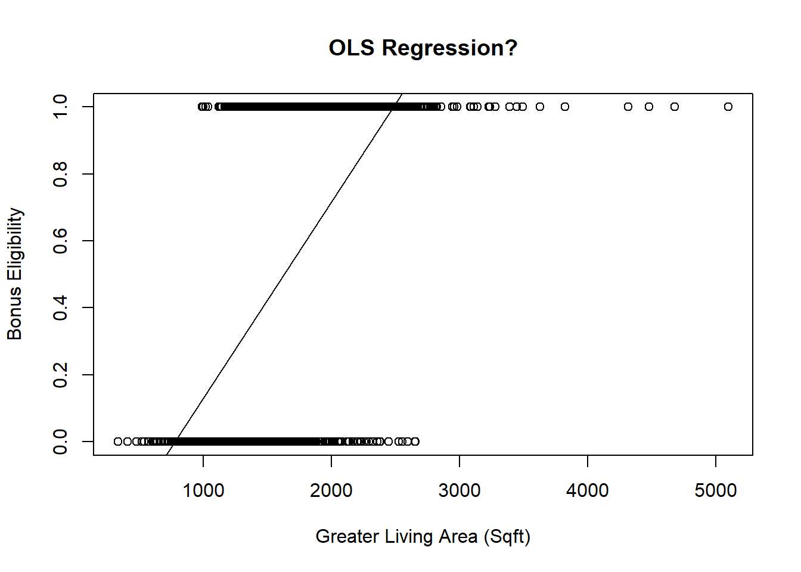
Even though it doesn’t appear to really look like our data, let’s fit this linear probability model anyway for completeness sake.
##
## Call:
## lm(formula = Bonus ~ Gr_Liv_Area, data = train)
##
## Residuals:
## Min 1Q Median 3Q Max
## -1.53611 -0.28889 -0.08924 0.38140 0.87552
##
## Coefficients:
## Estimate Std. Error t value Pr(>|t|)
## (Intercept) -4.557e-01 2.778e-02 -16.40 <2e-16 ***
## Gr_Liv_Area 5.872e-04 1.755e-05 33.46 <2e-16 ***
## ---
## Signif. codes: 0 '***' 0.001 '**' 0.01 '*' 0.05 '.' 0.1 ' ' 1
##
## Residual standard error: 0.3978 on 2049 degrees of freedom
## Multiple R-squared: 0.3534, Adjusted R-squared: 0.3531
## F-statistic: 1120 on 1 and 2049 DF, p-value: < 2.2e-16qqnorm(rstandard(lp.model),
ylab = "Standardized Residuals",
xlab = "Normal Scores",
main = "QQ-Plot of Residuals")
qqline(rstandard(lp.model))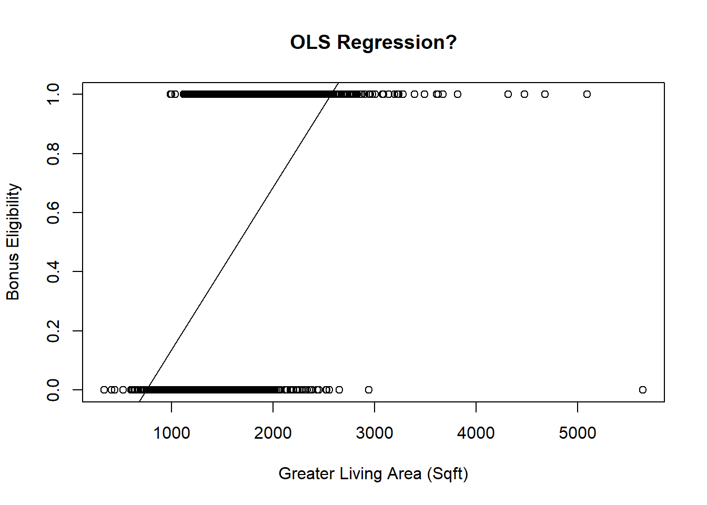
plot(predict(lp.model), resid(lp.model),
ylab="Residuals", xlab="Predicted Values",
main="Residuals of Linear Probability Model")
abline(0, 0) 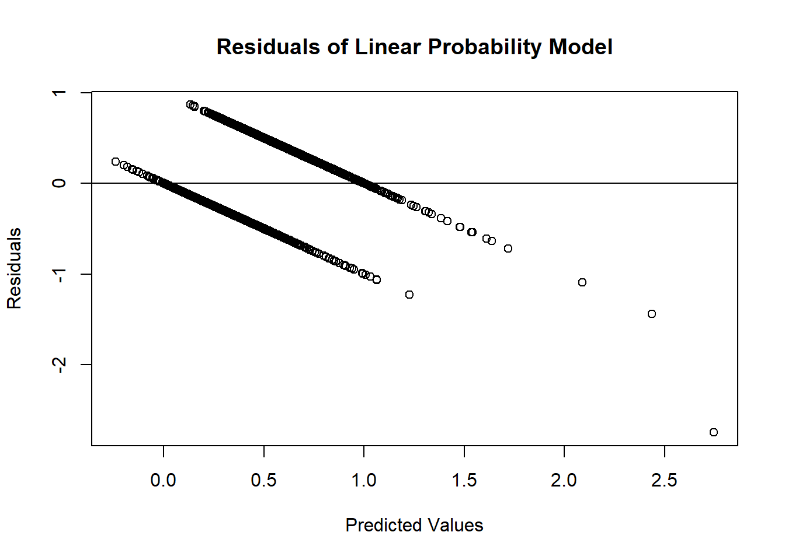
As we can see from the charts above, the assumptions of ordinary least squares don’t really hold in this situation. Therefore, we should be careful interpreting the results of the model. Maybe a better model won’t have these problems?
7.4.2 Binary Logistic Regression
Due to the limitations of the linear probability model, people typically just use the binary logistic regression model. The logistic regression model does not have the limitations of the linear probability model. The outcome of the logistic regression model is the probability of getting a 1 in a binary variable. That probability is calculated as follows:
\[ p_i = \frac{1}{1+e^{-(\beta_0 + \beta_1x_{1,i} + \cdots + \beta_k x_{k,i})}} \]
This function has the desired properties for predicting probabilities. The predicted probability from the above equation will always be between 0 and 1. The parameter estimates do not enter the function linearly (this is a non-linear regression model), and the rate of change of the probability varies as the predictor variables vary as seen in Figure 7.1.
Figure 7.1: Example of a Logistic Curve
To create a linear model, a link function is applied to the probabilities. The specific link function for logistic regression is called the logit function.
\[ logit(p_i) = \log(\frac{p_i}{1-p_i}) = \beta_0 + \beta_1x_{1,i} + \cdots + \beta_k x_{k,i} \]
The relationship between the predictor variables and the logits are linear in nature as the logits themselves are unbounded. This structure looks much more like our linear regression model structure. However, logistic regression does not use OLS to estimate the coefficients in our model. OLS requires residuals which the logistic regression model does not provide. The target variable is binary in nature, but the predictions are probabilities. Therefore, we cannot calculate a traditional residual. Instead, logistic regression uses maximum likelihood estimation. This is not covered here.
There are two main assumptions for logistic regression:
- Independence of observations
- Linearity of the logit
The first assumption of independence is the same as we had for linear regression. The second assumption implies that the logistic function transformation (the logit) actually makes a linear relationship with our predictor variables. This assumption can be tested, but will not be covered in this brief introduction to logistic regression.
Let’s build a logistic regression model. We will use the glm function to do this. The glm function has a similar structure to the lm function. The main difference is the family = binomial(link = "logit") option to specify that we are uses a logistic regression model. Again, there are many different link functions, but only the logistic link function (the logit) is being used here.
ames_logit <- glm(Bonus ~ Gr_Liv_Area,
data = train, family = binomial(link = "logit"))
summary(ames_logit)##
## Call:
## glm(formula = Bonus ~ Gr_Liv_Area, family = binomial(link = "logit"),
## data = train)
##
## Coefficients:
## Estimate Std. Error z value Pr(>|z|)
## (Intercept) -6.7232216 0.2986069 -22.52 <2e-16 ***
## Gr_Liv_Area 0.0042744 0.0001953 21.89 <2e-16 ***
## ---
## Signif. codes: 0 '***' 0.001 '**' 0.01 '*' 0.05 '.' 0.1 ' ' 1
##
## (Dispersion parameter for binomial family taken to be 1)
##
## Null deviance: 2798.4 on 2050 degrees of freedom
## Residual deviance: 1848.8 on 2049 degrees of freedom
## AIC: 1852.8
##
## Number of Fisher Scoring iterations: 5Let’s examine the above output. Scanning down the output, you can see the actual logistic regression equation for the variable Gr_Liv_Area. Here we can see that it appears to be a significant variable at predicting bonus eligibility. However, the coefficient reported does not have the same usable interpretation as in linear regression. An increase of one unit of greater living area square footage is linearly related to the logit not the probability of bonus eligibility. We can transform this coefficient to make it more interpretable. A single unit increase in greater living area square footage does have a \(100 \times (e^\hat{\beta}-1)\%\) increase in the average odds of bonus eligibility. We can use a combination of the exp and coef functions to obtain this number.
## Waiting for profiling to be done...## 2.5 % 97.5 %
## (Intercept) -99.87973 -99.9340202 -99.7871729
## Gr_Liv_Area 0.42835 0.3908748 0.4677782In other words, every additional square foot in greater living area in the home leads to an average increase in odds of 0.385% to be bonus eligible.
7.4.3 Adding Categorical Variables
Similar to linear regression as we learned in Chapter 3, logistic regression can have both continuous and categorical predictors for our categorical target variable. Let’s add both central air as well as number of fireplaces to our logistic regression model.
ames_logit2 <- glm(Bonus ~ Gr_Liv_Area + Central_Air + factor(Fireplaces),
data = train, family = binomial(link = "logit"))
summary(ames_logit2)##
## Call:
## glm(formula = Bonus ~ Gr_Liv_Area + Central_Air + factor(Fireplaces),
## family = binomial(link = "logit"), data = train)
##
## Coefficients:
## Estimate Std. Error z value Pr(>|z|)
## (Intercept) -1.078e+01 6.803e-01 -15.845 < 2e-16 ***
## Gr_Liv_Area 4.246e-03 2.204e-04 19.260 < 2e-16 ***
## Central_AirY 3.721e+00 5.299e-01 7.022 2.18e-12 ***
## factor(Fireplaces)1 9.005e-01 1.285e-01 7.007 2.43e-12 ***
## factor(Fireplaces)2 5.939e-01 2.418e-01 2.456 0.0141 *
## factor(Fireplaces)3 9.039e-01 1.159e+00 0.780 0.4355
## factor(Fireplaces)4 8.389e+00 3.247e+02 0.026 0.9794
## ---
## Signif. codes: 0 '***' 0.001 '**' 0.01 '*' 0.05 '.' 0.1 ' ' 1
##
## (Dispersion parameter for binomial family taken to be 1)
##
## Null deviance: 2798.4 on 2050 degrees of freedom
## Residual deviance: 1681.3 on 2044 degrees of freedom
## AIC: 1695.3
##
## Number of Fisher Scoring iterations: 11Just like with linear regression, categorical predictor variables are a comparison between two categories. Again, the coefficients from the logistic regression model need to be transformed to be interpreted.
## 2.5 % 97.5 %
## (Intercept) -9.999792e+01 -99.9994936 -99.9926306
## Gr_Liv_Area 4.254642e-01 0.3831432 0.4699633
## Central_AirY 4.031057e+03 1481.0813827 12759.4869933
## factor(Fireplaces)1 1.460753e+02 91.3612922 216.7584342
## factor(Fireplaces)2 8.109741e+01 12.7293299 191.2582551
## factor(Fireplaces)3 1.469283e+02 -66.0951680 4957.6780480
## factor(Fireplaces)4 4.399156e+05 -100.0000000 NALet’s use the first fireplace variable as an example. A home with one fireplace has, on average, 167.04% higher odds of being bonus eligible as compared to a home with zero fireplaces.
7.4.4 Model Assessment
There are dozens of different ways to evaluate a logistic regression model. We will cover one popular way here - concordance. Counting the number of concordant, discordant, and tied pairs is a way to to assess how well the model fits the data.
To find concordant, discordant, and tied pairs, we must compare all of the 0’s in the target variable to all of the 1’s. For our example, we will compare every pair of homes where one home is bonus eligible and one is not (every 0 and 1 pair). A concordant pair is a 0 and 1 pair where the bonus eligible home (the 1 in our model) has a higher predicted probability than the non-bonus eligible home (the 0 in our model) - our model successfully ordered these two observations by probability. It does not matter what the actual predicted probability values are as long as the bonus eligible home has a higher predicted probability than the non-bonus eligible home. A discordant pair is a 0 and 1 pair where the bonus eligible home (the 1 in our model) has a lower predicted probability than the non-bonus eligible home (the 0 in our model) - our model unsuccessfully ordered the homes. It does not matter what the actual predicted probability values are as long as the bonus eligible home has a lower predicted probability than the non-bonus eligible home. A tied pair is a 0 and 1 pair where the bonus eligible home has the same predicted probability as the non-bonus eligible home - the model is confused and sees these two different things as the same. In general, you want a high percentage of concordant pairs and low percentages of discordant and tied pairs.
We can use the concordance function from the survival package to obtain these values on our predictions from the predict function.
## Call:
## concordance.lm(object = ames_logit)
##
## n= 2051
## Concordance= 0.8722 se= 0.007471
## concordant discordant tied.x tied.y tied.xy
## 896896 131204 598 1071694 1883From the above output we have a concordance of 86.3% for our model. There is no good or bad value as this can only be compared with another model to see which is better. Let’s compare this to our model with the categorical variables.
## Call:
## concordance.lm(object = ames_logit2)
##
## n= 2051
## Concordance= 0.8916 se= 0.006812
## concordant discordant tied.x tied.y tied.xy
## 917013 111425 260 1072547 1030We can see that the model with categorical predictors added to it has a higher concordance at 88.4%. That implies that our model is correctly able to rank our observations 88.4% of the time. This is NOT the same thing as saying our model is 88.4% accurate. Accuracy (which is not covered here) deals with a prediction being correct or incorrect. Concordance is only measuring how often we are able to predict 1’s with higher probability than 0’s - again, correctly ranking the observations.
7.4.5 Variable Selection and Regularized Regression
As with linear regression in Chapters ?? and ??, logistic regression uses the same approaches to doing variable selection. In fact, the same function are used as well. Let’s use the step function to apply a forward and backward selection to the logistic regression model.
train_sel_log <- train %>%
dplyr::select(Bonus,
Lot_Area,
Street,
Bldg_Type,
House_Style,
Overall_Qual,
Roof_Style,
Central_Air,
First_Flr_SF,
Second_Flr_SF,
Full_Bath,
Half_Bath,
Fireplaces,
Garage_Area,
Gr_Liv_Area,
TotRms_AbvGrd) %>%
mutate_if(is.numeric, ~replace_na(.,mean(., na.rm = TRUE)))
full.model <- glm(Bonus ~ . , data = train_sel_log)
empty.model <- glm(Bonus ~ 1, data = train_sel_log)for.model <- step(empty.model,
scope = list(lower = formula(empty.model),
upper = formula(full.model)),
direction = "forward", k = log(dim(train_sel_log)[1]))## Start: AIC=2941.56
## Bonus ~ 1
##
## Df Deviance AIC
## + Overall_Qual 9 234.03 1446.8
## + Full_Bath 1 321.53 2037.3
## + Gr_Liv_Area 1 324.32 2055.0
## + Garage_Area 1 365.22 2298.6
## + First_Flr_SF 1 392.98 2448.8
## + Fireplaces 1 421.02 2590.2
## + TotRms_AbvGrd 1 425.55 2612.1
## + House_Style 7 440.37 2728.1
## + Half_Bath 1 461.69 2779.3
## + Second_Flr_SF 1 463.15 2785.8
## + Lot_Area 1 476.66 2844.7
## + Central_Air 1 478.87 2854.2
## + Bldg_Type 4 482.55 2892.8
## <none> 501.56 2941.6
## + Street 1 500.83 2946.2
## + Roof_Style 5 495.02 2952.8
##
## Step: AIC=1446.78
## Bonus ~ Overall_Qual
##
## Df Deviance AIC
## + Gr_Liv_Area 1 203.97 1172.4
## + Full_Bath 1 205.69 1189.7
## + First_Flr_SF 1 215.85 1288.5
## + Garage_Area 1 221.37 1340.3
## + Fireplaces 1 221.64 1342.9
## + TotRms_AbvGrd 1 223.25 1357.7
## + Lot_Area 1 223.28 1357.9
## + Half_Bath 1 229.49 1414.2
## + Bldg_Type 4 227.01 1414.8
## + Second_Flr_SF 1 229.95 1418.4
## + House_Style 7 225.68 1425.6
## + Central_Air 1 232.66 1442.4
## <none> 234.03 1446.8
## + Street 1 234.00 1454.2
## + Roof_Style 5 233.29 1478.4
##
## Step: AIC=1172.44
## Bonus ~ Overall_Qual + Gr_Liv_Area
##
## Df Deviance AIC
## + Full_Bath 1 195.07 1088.6
## + House_Style 7 193.27 1115.3
## + Garage_Area 1 198.18 1121.0
## + First_Flr_SF 1 198.64 1125.8
## + Second_Flr_SF 1 199.40 1133.6
## + Fireplaces 1 200.40 1143.8
## + Lot_Area 1 200.63 1146.2
## + TotRms_AbvGrd 1 201.41 1154.2
## + Bldg_Type 4 199.82 1160.8
## + Central_Air 1 202.40 1164.2
## <none> 203.97 1172.4
## + Street 1 203.87 1179.1
## + Half_Bath 1 203.97 1180.1
## + Roof_Style 5 203.50 1205.8
##
## Step: AIC=1088.59
## Bonus ~ Overall_Qual + Gr_Liv_Area + Full_Bath
##
## Df Deviance AIC
## + Fireplaces 1 189.84 1040.4
## + Bldg_Type 4 187.84 1041.6
## + Garage_Area 1 190.43 1046.8
## + First_Flr_SF 1 190.44 1046.9
## + House_Style 7 186.37 1048.4
## + Second_Flr_SF 1 191.06 1053.6
## + Lot_Area 1 191.14 1054.5
## + TotRms_AbvGrd 1 191.54 1058.7
## + Central_Air 1 193.55 1080.2
## <none> 195.07 1088.6
## + Half_Bath 1 194.58 1091.0
## + Street 1 194.91 1094.5
## + Roof_Style 5 194.43 1120.0
##
## Step: AIC=1040.41
## Bonus ~ Overall_Qual + Gr_Liv_Area + Full_Bath + Fireplaces
##
## Df Deviance AIC
## + Garage_Area 1 185.71 1002.9
## + Bldg_Type 4 183.79 1004.5
## + House_Style 7 182.24 1010.0
## + First_Flr_SF 1 186.74 1014.3
## + Lot_Area 1 187.07 1017.9
## + TotRms_AbvGrd 1 187.07 1017.9
## + Second_Flr_SF 1 187.21 1019.4
## + Central_Air 1 188.84 1037.2
## <none> 189.84 1040.4
## + Half_Bath 1 189.19 1041.0
## + Street 1 189.71 1046.6
## + Roof_Style 5 189.48 1074.6
##
## Step: AIC=1002.93
## Bonus ~ Overall_Qual + Gr_Liv_Area + Full_Bath + Fireplaces +
## Garage_Area
##
## Df Deviance AIC
## + Bldg_Type 4 180.46 974.62
## + TotRms_AbvGrd 1 183.32 984.05
## + House_Style 7 179.68 988.60
## + Lot_Area 1 183.76 988.91
## + First_Flr_SF 1 183.77 989.05
## + Second_Flr_SF 1 184.11 992.87
## + Half_Bath 1 185.00 1002.68
## <none> 185.71 1002.93
## + Central_Air 1 185.31 1006.21
## + Street 1 185.67 1010.14
## + Roof_Style 5 185.30 1036.57
##
## Step: AIC=974.62
## Bonus ~ Overall_Qual + Gr_Liv_Area + Full_Bath + Fireplaces +
## Garage_Area + Bldg_Type
##
## Df Deviance AIC
## + House_Style 7 173.94 952.54
## + TotRms_AbvGrd 1 178.21 956.56
## + First_Flr_SF 1 178.34 958.03
## + Second_Flr_SF 1 178.74 962.63
## + Lot_Area 1 179.23 968.25
## + Half_Bath 1 179.60 972.47
## <none> 180.46 974.62
## + Central_Air 1 180.34 980.86
## + Street 1 180.41 981.68
## + Roof_Style 5 179.92 1006.63
##
## Step: AIC=952.54
## Bonus ~ Overall_Qual + Gr_Liv_Area + Full_Bath + Fireplaces +
## Garage_Area + Bldg_Type + House_Style
##
## Df Deviance AIC
## + TotRms_AbvGrd 1 172.12 938.57
## + Half_Bath 1 172.12 938.64
## + First_Flr_SF 1 173.20 951.44
## + Lot_Area 1 173.26 952.11
## <none> 173.94 952.54
## + Second_Flr_SF 1 173.53 955.28
## + Street 1 173.89 959.55
## + Central_Air 1 173.89 959.62
## + Roof_Style 5 172.98 979.31
##
## Step: AIC=938.57
## Bonus ~ Overall_Qual + Gr_Liv_Area + Full_Bath + Fireplaces +
## Garage_Area + Bldg_Type + House_Style + TotRms_AbvGrd
##
## Df Deviance AIC
## + Half_Bath 1 170.39 925.47
## + First_Flr_SF 1 171.27 936.04
## <none> 172.12 938.57
## + Lot_Area 1 171.51 938.97
## + Second_Flr_SF 1 171.62 940.26
## + Central_Air 1 172.07 945.61
## + Street 1 172.07 945.67
## + Roof_Style 5 171.37 967.80
##
## Step: AIC=925.47
## Bonus ~ Overall_Qual + Gr_Liv_Area + Full_Bath + Fireplaces +
## Garage_Area + Bldg_Type + House_Style + TotRms_AbvGrd + Half_Bath
##
## Df Deviance AIC
## + First_Flr_SF 1 169.12 917.84
## + Second_Flr_SF 1 169.54 922.84
## <none> 170.39 925.47
## + Lot_Area 1 169.79 925.89
## + Street 1 170.34 932.60
## + Central_Air 1 170.38 933.04
## + Roof_Style 5 169.67 954.95
##
## Step: AIC=917.84
## Bonus ~ Overall_Qual + Gr_Liv_Area + Full_Bath + Fireplaces +
## Garage_Area + Bldg_Type + House_Style + TotRms_AbvGrd + Half_Bath +
## First_Flr_SF
##
## Df Deviance AIC
## <none> 169.12 917.84
## + Lot_Area 1 168.68 920.13
## + Second_Flr_SF 1 168.89 922.66
## + Street 1 169.08 924.93
## + Central_Air 1 169.12 925.42
## + Roof_Style 5 168.34 946.38back.model <- step(full.model,
scope = list(lower = formula(empty.model),
upper = formula(full.model)),
direction = "backward", k = log(dim(train_sel_log)[1]))## Start: AIC=968.39
## Bonus ~ Lot_Area + Street + Bldg_Type + House_Style + Overall_Qual +
## Roof_Style + Central_Air + First_Flr_SF + Second_Flr_SF +
## Full_Bath + Half_Bath + Fireplaces + Garage_Area + Gr_Liv_Area +
## TotRms_AbvGrd
##
## Df Deviance AIC
## - Roof_Style 5 168.42 939.83
## - Central_Air 1 167.64 960.83
## - Street 1 167.69 961.33
## - Gr_Liv_Area 1 167.70 961.50
## - House_Style 7 171.53 962.08
## - Second_Flr_SF 1 167.86 963.50
## - Lot_Area 1 168.04 965.66
## - First_Flr_SF 1 168.25 968.29
## <none> 167.64 968.39
## - Garage_Area 1 168.68 973.48
## - TotRms_AbvGrd 1 169.23 980.10
## - Fireplaces 1 169.55 983.97
## - Half_Bath 1 169.57 984.28
## - Bldg_Type 4 173.13 1004.03
## - Full_Bath 1 180.39 1111.14
## - Overall_Qual 9 210.29 1364.65
##
## Step: AIC=939.83
## Bonus ~ Lot_Area + Street + Bldg_Type + House_Style + Overall_Qual +
## Central_Air + First_Flr_SF + Second_Flr_SF + Full_Bath +
## Half_Bath + Fireplaces + Garage_Area + Gr_Liv_Area + TotRms_AbvGrd
##
## Df Deviance AIC
## - House_Style 7 172.20 931.94
## - Central_Air 1 168.43 932.26
## - Street 1 168.46 932.60
## - Gr_Liv_Area 1 168.48 932.92
## - Second_Flr_SF 1 168.65 934.93
## - Lot_Area 1 168.84 937.32
## - First_Flr_SF 1 169.02 939.50
## <none> 168.42 939.83
## - Garage_Area 1 169.45 944.67
## - TotRms_AbvGrd 1 170.20 953.73
## - Fireplaces 1 170.37 955.83
## - Half_Bath 1 170.38 955.96
## - Bldg_Type 4 173.77 973.43
## - Full_Bath 1 181.49 1085.42
## - Overall_Qual 9 211.49 1338.20
##
## Step: AIC=931.94
## Bonus ~ Lot_Area + Street + Bldg_Type + Overall_Qual + Central_Air +
## First_Flr_SF + Second_Flr_SF + Full_Bath + Half_Bath + Fireplaces +
## Garage_Area + Gr_Liv_Area + TotRms_AbvGrd
##
## Df Deviance AIC
## - Central_Air 1 172.20 924.35
## - Street 1 172.24 924.79
## - Gr_Liv_Area 1 172.31 925.58
## - Second_Flr_SF 1 172.53 928.24
## - Lot_Area 1 172.68 929.99
## <none> 172.20 931.94
## - First_Flr_SF 1 173.01 933.99
## - Garage_Area 1 173.52 939.93
## - TotRms_AbvGrd 1 173.94 944.94
## - Fireplaces 1 173.96 945.12
## - Bldg_Type 4 177.00 957.87
## - Half_Bath 1 175.20 959.78
## - Full_Bath 1 186.39 1086.75
## - Overall_Qual 9 217.61 1343.37
##
## Step: AIC=924.35
## Bonus ~ Lot_Area + Street + Bldg_Type + Overall_Qual + First_Flr_SF +
## Second_Flr_SF + Full_Bath + Half_Bath + Fireplaces + Garage_Area +
## Gr_Liv_Area + TotRms_AbvGrd
##
## Df Deviance AIC
## - Street 1 172.24 917.18
## - Gr_Liv_Area 1 172.31 918.00
## - Second_Flr_SF 1 172.53 920.65
## - Lot_Area 1 172.68 922.41
## <none> 172.20 924.35
## - First_Flr_SF 1 173.02 926.43
## - Garage_Area 1 173.58 933.08
## - TotRms_AbvGrd 1 173.94 937.36
## - Fireplaces 1 173.97 937.72
## - Bldg_Type 4 177.09 951.21
## - Half_Bath 1 175.27 952.94
## - Full_Bath 1 186.46 1079.90
## - Overall_Qual 9 217.63 1335.94
##
## Step: AIC=917.18
## Bonus ~ Lot_Area + Bldg_Type + Overall_Qual + First_Flr_SF +
## Second_Flr_SF + Full_Bath + Half_Bath + Fireplaces + Garage_Area +
## Gr_Liv_Area + TotRms_AbvGrd
##
## Df Deviance AIC
## - Gr_Liv_Area 1 172.35 910.85
## - Second_Flr_SF 1 172.57 913.50
## - Lot_Area 1 172.74 915.42
## <none> 172.24 917.18
## - First_Flr_SF 1 173.06 919.26
## - Garage_Area 1 173.67 926.46
## - TotRms_AbvGrd 1 173.99 930.25
## - Fireplaces 1 174.02 930.62
## - Bldg_Type 4 177.11 943.83
## - Half_Bath 1 175.31 945.80
## - Full_Bath 1 186.47 1072.33
## - Overall_Qual 9 217.64 1328.33
##
## Step: AIC=910.85
## Bonus ~ Lot_Area + Bldg_Type + Overall_Qual + First_Flr_SF +
## Second_Flr_SF + Full_Bath + Half_Bath + Fireplaces + Garage_Area +
## TotRms_AbvGrd
##
## Df Deviance AIC
## - Lot_Area 1 172.84 909.10
## <none> 172.35 910.85
## - Second_Flr_SF 1 173.62 918.28
## - Garage_Area 1 173.78 920.18
## - Fireplaces 1 174.12 924.24
## - TotRms_AbvGrd 1 174.26 925.88
## - Bldg_Type 4 177.17 936.90
## - Half_Bath 1 175.44 939.72
## - First_Flr_SF 1 178.67 977.08
## - Full_Bath 1 186.54 1065.52
## - Overall_Qual 9 217.89 1323.14
##
## Step: AIC=909.1
## Bonus ~ Bldg_Type + Overall_Qual + First_Flr_SF + Second_Flr_SF +
## Full_Bath + Half_Bath + Fireplaces + Garage_Area + TotRms_AbvGrd
##
## Df Deviance AIC
## <none> 172.84 909.10
## - Second_Flr_SF 1 174.24 917.97
## - Garage_Area 1 174.40 919.85
## - Fireplaces 1 174.82 924.82
## - TotRms_AbvGrd 1 174.84 925.01
## - Half_Bath 1 176.00 938.63
## - Bldg_Type 4 178.44 943.92
## - First_Flr_SF 1 180.36 988.80
## - Full_Bath 1 187.00 1062.92
## - Overall_Qual 9 217.97 1316.21In the above two approaches we used the BIC selection criteria. Here both forward and backward selection actually picked the same model. Let’s check the concordance of this model.
## Call:
## concordance.lm(object = back.model)
##
## n= 2051
## Concordance= 0.9646 se= 0.003316
## concordant discordant tied.x tied.y tied.xy
## 992249 36445 4 1073514 63Not surprisingly, this model outperforms the previous model that we had with a concordance of 96.1%.
Although not covered in detail here, regularized regression can also be applied to logistic regression to get a different view. This might be helpful with the multicollinearity present in these predictor variables. Again, we can use the glmnet function with the addition of a family = "binomial" option.
7.4.6 Python Code
Linear Probability Model
import statsmodels.formula.api as smf
lp_model = smf.ols("Bonus ~ Gr_Liv_Area", data = train).fit()
lp_model.summary()| Dep. Variable: | Bonus | R-squared: | 0.328 |
|---|---|---|---|
| Model: | OLS | Adj. R-squared: | 0.327 |
| Method: | Least Squares | F-statistic: | 998.6 |
| Date: | Thu, 11 Jun 2026 | Prob (F-statistic): | 7.04e-179 |
| Time: | 13:32:55 | Log-Likelihood: | -1063.1 |
| No. Observations: | 2051 | AIC: | 2130. |
| Df Residuals: | 2049 | BIC: | 2142. |
| Df Model: | 1 | ||
| Covariance Type: | nonrobust |
| coef | std err | t | P>|t| | [0.025 | 0.975] | |
|---|---|---|---|---|---|---|
| Intercept | -0.4056 | 0.028 | -14.471 | 0.000 | -0.461 | -0.351 |
| Gr_Liv_Area | 0.0006 | 1.76e-05 | 31.601 | 0.000 | 0.001 | 0.001 |
| Omnibus: | 0.074 | Durbin-Watson: | 2.088 |
|---|---|---|---|
| Prob(Omnibus): | 0.964 | Jarque-Bera (JB): | 0.093 |
| Skew: | 0.014 | Prob(JB): | 0.955 |
| Kurtosis: | 2.983 | Cond. No. | 4.96e+03 |
Notes:
[1] Standard Errors assume that the covariance matrix of the errors is correctly specified.
[2] The condition number is large, 4.96e+03. This might indicate that there are
strong multicollinearity or other numerical problems.
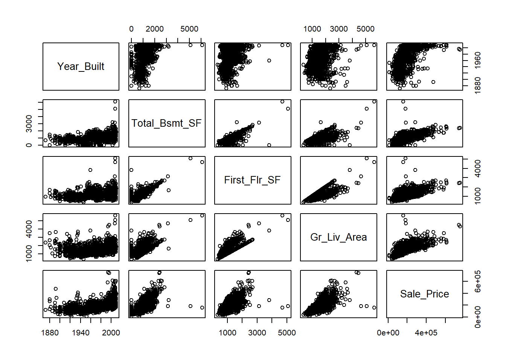
train['pred_lp'] = lp_model.predict()
train['resid_lp'] = lp_model.resid
train[['Bonus', 'pred_lp', 'resid_lp']].head(n = 10)## Bonus pred_lp resid_lp
## 2278 0 0.727900 -0.727900
## 1379 0 0.098187 -0.098187
## 2182 0 0.191808 -0.191808
## 1436 1 0.515023 0.484977
## 1599 0 0.202954 -0.202954
## 452 1 0.322209 0.677791
## 585 1 1.065604 -0.065604
## 1078 0 0.500534 -0.500534
## 2452 1 1.002075 -0.002075
## 1658 0 0.565735 -0.565735plt.cla()
ax = sns.relplot(data = train, y = "resid_lp", x = "pred_lp")
ax.set(ylabel = 'Residuals',
xlabel = 'Predicted Probability of Bonus')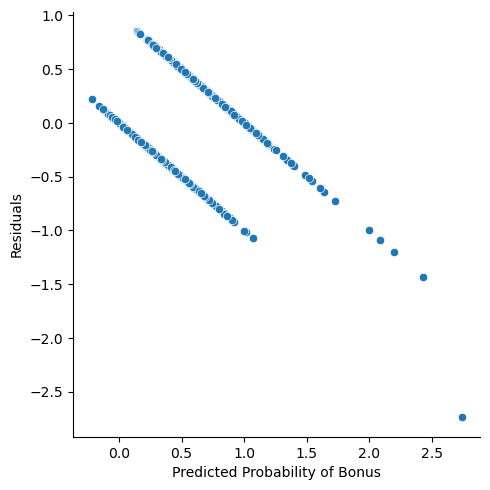
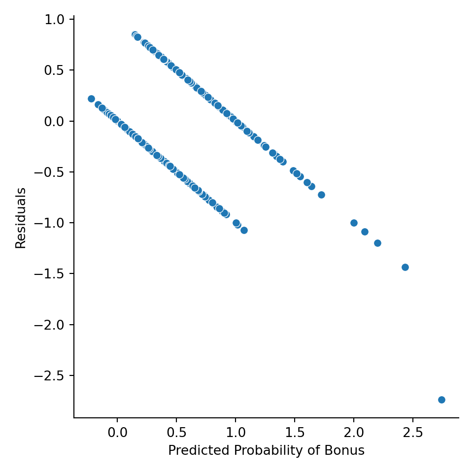
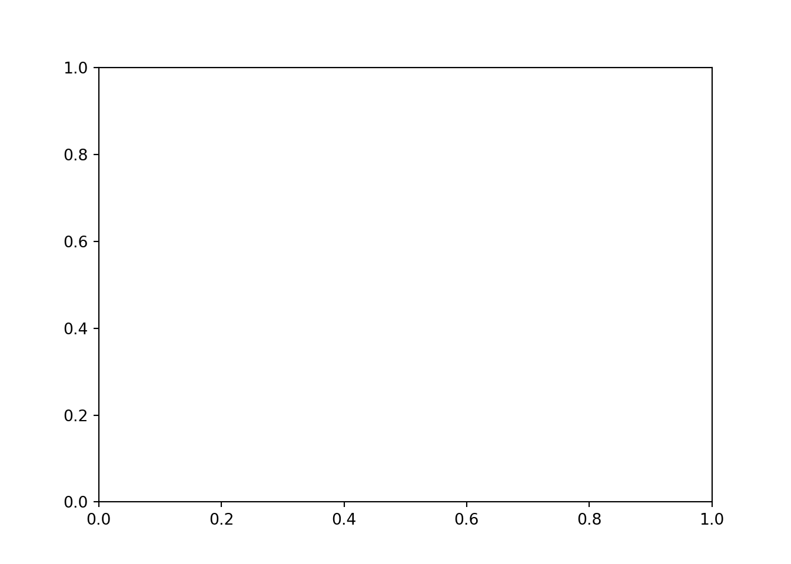
Binary Logistic Regression
## Optimization terminated successfully.
## Current function value: 0.466728
## Iterations 7| Dep. Variable: | Bonus | No. Observations: | 2051 |
|---|---|---|---|
| Model: | Logit | Df Residuals: | 2049 |
| Method: | MLE | Df Model: | 1 |
| Date: | Thu, 11 Jun 2026 | Pseudo R-squ.: | 0.3179 |
| Time: | 13:32:56 | Log-Likelihood: | -957.26 |
| converged: | True | LL-Null: | -1403.4 |
| Covariance Type: | nonrobust | LLR p-value: | 4.571e-196 |
| coef | std err | z | P>|z| | [0.025 | 0.975] | |
|---|---|---|---|---|---|---|
| Intercept | -6.3503 | 0.286 | -22.231 | 0.000 | -6.910 | -5.790 |
| Gr_Liv_Area | 0.0041 | 0.000 | 21.645 | 0.000 | 0.004 | 0.004 |
## Intercept -99.825386
## Gr_Liv_Area 0.405848
## dtype: float64Adding Categorical Variables
## Warning: Maximum number of iterations has been exceeded.
## Current function value: 0.421157
## Iterations: 35
## C:\PROGRA~3\ANACON~1\Lib\site-packages\statsmodels\base\model.py:607: ConvergenceWarning: Maximum Likelihood optimization failed to converge. Check mle_retvals| Dep. Variable: | Bonus | No. Observations: | 2051 |
|---|---|---|---|
| Model: | Logit | Df Residuals: | 2044 |
| Method: | MLE | Df Model: | 6 |
| Date: | Thu, 11 Jun 2026 | Pseudo R-squ.: | 0.3845 |
| Time: | 13:32:56 | Log-Likelihood: | -863.79 |
| converged: | False | LL-Null: | -1403.4 |
| Covariance Type: | nonrobust | LLR p-value: | 6.407e-230 |
| coef | std err | z | P>|z| | [0.025 | 0.975] | |
|---|---|---|---|---|---|---|
| Intercept | -10.1177 | 0.667 | -15.176 | 0.000 | -11.424 | -8.811 |
| C(Central_Air)[T.Y] | 3.4809 | 0.536 | 6.495 | 0.000 | 2.430 | 4.531 |
| C(Fireplaces)[T.1] | 1.1059 | 0.126 | 8.766 | 0.000 | 0.859 | 1.353 |
| C(Fireplaces)[T.2] | 0.6891 | 0.235 | 2.930 | 0.003 | 0.228 | 1.150 |
| C(Fireplaces)[T.3] | -0.4379 | 0.964 | -0.454 | 0.650 | -2.328 | 1.452 |
| C(Fireplaces)[T.4] | 17.4289 | 3.95e+04 | 0.000 | 1.000 | -7.73e+04 | 7.73e+04 |
| Gr_Liv_Area | 0.0039 | 0.000 | 18.786 | 0.000 | 0.004 | 0.004 |
## Intercept -9.999596e+01
## C(Central_Air)[T.Y] 3.149026e+03
## C(Fireplaces)[T.1] 2.021892e+02
## C(Fireplaces)[T.2] 9.919188e+01
## C(Fireplaces)[T.3] -3.545996e+01
## C(Fireplaces)[T.4] 3.709002e+09
## Gr_Liv_Area 3.928177e-01
## dtype: float64## Intercept 4.035898e-05
## C(Central_Air)[T.Y] 3.249026e+01
## C(Fireplaces)[T.1] 3.021892e+00
## C(Fireplaces)[T.2] 1.991919e+00
## C(Fireplaces)[T.3] 6.454004e-01
## C(Fireplaces)[T.4] 3.709002e+07
## Gr_Liv_Area 1.003928e+00
## dtype: float64Model Assessment
Concordance:
from sklearn.linear_model import LogisticRegression
from sklearn.metrics import roc_auc_score
lp_model = smf.ols("Bonus ~ Gr_Liv_Area", data = train).fit()
pred_probabilities = lp_model.predict(train)
concordance = roc_auc_score(train['Bonus'], pred_probabilities)
print(f"\nConcordance Statistic (C-Statistic): {concordance:.4f}")##
## Concordance Statistic (C-Statistic): 0.8657Variable Selection and Regularized Regression
Python does NOT have nice capabilities to do variable selection automatically in statsmodels, scikitlearn, or scipy. All resources I can find involve downloading and installing a package (mlxtend) that is not included by default in anaconda or writing your own function. Scikit learn has something similar but uses the model’s coefficients (!!!) to select, not p-values. Scikit learn can do this by evaluating a metric on cross-validation, but that is not covered until machine learning in Fall 3.